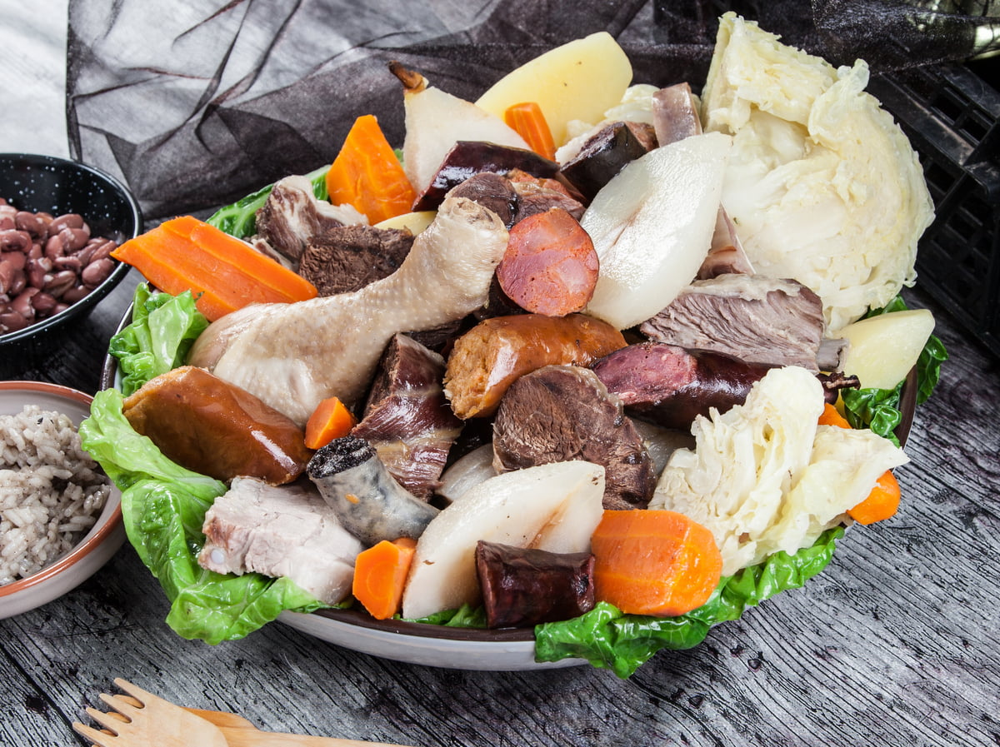

For this recipe you will need:
Arrange the meats, season the pork with salt and let it rest in the cold overnight. On the day, rinse them with water and cook them with the remaining meats, the chicken in pieces, the meat chorizo, the black pudding and the farinheira in water seasoned with salt, bay leaves and peppercorns. Remove and set aside as they cook. Arrange and wash the cabbage, peel and wash the carrots, potatoes and pears, cut them in half, boil all these ingredients in the meat cooking water and remove. Then use 8 dl of the broth, adjust the seasonings, cook the blood sausage and remove. Add the red beans to the same broth, let it heat up and remove. Peel and chop the onion and garlic, place in a pan, add the oil, bring to the boil and let it sauté a little. Add the rice, mix well, add the blood sausage broth, stir, cover and cook over a very low heat for 16 minutes. Serve the meat and sausages cut into pieces with the vegetables, pears, rice and beans.
Some other recipes from portugal!